▲ 광한루원의 연못과 누각. 단풍철이 아닌 시기에 촬영된 사진이다. 사진=한국관광공사
10월 6일 오늘, 남원의 지리산 단풍은 아직 시작 전이다. 산림청이 9월 22일 발표한 '2026년 한반도 단풍 절정 예측지도'는 전국 산림의 단풍나무류·참나무류 절정일을 10월 31일로 제시했고, 대표 산별로는 설악산 10월 20일, 속리산 10월 28일, 내장산 11월 4일, 한라산 11월 6일을 꼽았다. 지리산이나 뱀사골만 따로 짚은 절정 예상일은 확인한 보도에서 찾지 못했다. 그래서 이 글은 "지금 가면 단풍을 볼 수 있다"고 쓰지 않는다. 대신 남원 가을 하루를 짜는 데 필요한 사실, 즉 광한루원 요금·시간·주차, 뱀사골 탐방 조건, 정령치·달궁 방향 도로 사정을 공식 안내와 보도에서 확인되는 범위로 정리하고, 확인하지 못한 항목은 따로 표시했다.
1. 단풍은 언제부터 — 산림청 예측과 지리산의 빈칸
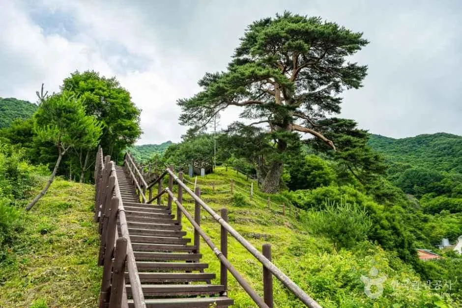
▲ 뱀사골 와운마을 전망 계단 주변의 소나무와 산세. 단풍철이 아닌 녹음기에 촬영된 사진이다. 사진=한국관광공사
산림청 예측은 올해 첫 단풍이 9월 14일 점봉산 산림유전자원보호구역에서 확인됐고, 절정은 최근 5년 평균보다 약 0.8일 늦을 것으로 본다. 절정은 산 전체 잎의 50% 이상이 물든 시점을 기준으로 한다는 설명이 보도에 붙었고, 기상청은 주요 산 기준으로 80%를 쓴다고 한다. 이 예측에서 호남권 대표로 나온 곳은 내장산(11월 4일)이다. 남원 지리산은 같은 호남이지만 별도 날짜가 보도되지 않았다.
| 구분 | 내용 | 출처·확인 상태 |
|---|---|---|
| 전국 단풍나무류·참나무류 절정 | 10월 31일 | 산림청 예측지도(서울신문 9월 22일) |
| 은행나무 절정 | 10월 30일 | 같은 보도 |
| 설악산 / 속리산 | 10월 20일 / 10월 28일 | 같은 보도 |
| 내장산 / 한라산 | 11월 4일 / 11월 6일 | 같은 보도 |
| 지리산·뱀사골·정령치 | 예상일 확인하지 못함 | 보도에 없음. 지리산국립공원전북사무소(063-630-8900) 문의 |
| 뱀사골 "10월 말 절정" 설 | 오래된 보도 한 건(피아골보다 3~4일 빠르다는 설명) | 단일·구형 출처, 올해 예측 아님 |
정리하면 오늘 같은 10월 초 방문은 단풍보다 광한루원 중심으로 잡는 편이 안전하다. 뱀사골·정령치 단풍을 노린다면 산림청 전국 절정(10월 31일 전후)을 기준으로 10월 마지막 주 이후를 후보로 두되, 이 날짜는 카프리즘의 추정이고 실제 물든 정도는 출발 직전 현지 소식으로 확인해야 한다.
| 시기 | 단풍 기대 | 추천 동선 | 비고 |
|---|---|---|---|
| 10월 초~중순(지금) | 이른 편(추정) | 광한루원·춘향테마파크 중심, 뱀사골은 신록~초가을 계곡 산책 | 단풍 사진을 기대하고 가면 실망할 수 있음 |
| 10월 하순 | 고지대부터 시작(추정) | 정령치·뱀사골 위쪽부터 확인 | 산림청 전국 절정 10월 31일 전후라는 점이 유일한 공식 기준 |
| 10월 말~11월 초 | 절정 후보(추정) | 뱀사골 오전 탐방 + 광한루원 | 정령치 통행 제한이 시작되는 11월 전후는 남원시에 확인 |
뱀사골이 피아골보다 3~4일 먼저 절정에 든다는 설명은 오래된 보도에 나온 것이어서 올해 예측으로 쓰지 않았다. 오래된 보도들이 말하는 '10월 말'과 산림청의 올해 전국 예측일이 겹친다는 정도로만 참고하면 된다.
2. 광한루원 — 요금·시간·주차, 그리고 18시 이후 무료
▲ 광한루원의 연못과 누각. 연못 가운데 삼신산을 조성한 구성이 특징이다. 사진=한국관광공사
광한루원(남원시 요천로 1447)은 명승 제33호로, 남원시 문화관광 안내는 천체 우주를 상징해 조성한 전통 누원이라고 설명한다. 광한루를 월궁에, 연못을 은하수에, 오작교를 그 위의 다리에 빗댄 구성이다. 완월정·방장정·영주각·춘향관·춘향사당은 모두 무료로 볼 수 있다고 안내돼 있다.
| 항목 | 내용 | 비고 |
|---|---|---|
| 주소·문의 | 전북특별자치도 남원시 요천로 1447 / 063-620-8901 | 관광시설과 063-625-4861(TourAPI) |
| 운영시간 | 하절기(4~10월) 08:00~21:00, 동절기(11~3월) 08:00~20:00 | 10월은 하절기 적용 |
| 무료 시간대 | 18시 이후 무료(하절기 18:00~21:00, 동절기 18:00~20:00) | 야간 산책 가능 |
| 입장료 | 성인 4,000원 / 청소년 2,000원 / 어린이 1,500원 | 남원시 문화관광 게시 기준 |
| 휴무 | 연중무휴 | |
| 주차 | 주차시설 있음. 승용차 2,000원, 15인승 이하 승합차 2,000원, 16인승 이상 4,000원 | 남원시 문화관광 게시 기준 |
| 경내 무료 시설 | 광한루, 완월정, 방장정, 영주각, 춘향관, 춘향사당 | 남원시 문화관광 안내 |
입장료 4,000원은 2023년 4월 8일 3,000원에서 올랐다는 보도가 있다. 같은 때 관광객에게 입장료 일부를 돌려주는 남원사랑상품권 환급액이 1,000원에서 2,000원으로 늘었다고 했으나, 2026년 현재 환급 제도가 같은 조건인지는 확인하지 못했다. 무료 입장 대상(만 6세 이하, 만 65세 이상, 장애인 등)은 여행 정보 사이트에서 확인한 내용이라 현장 매표소 기준을 따르면 된다.
공식 안내와 요금은 남원시 문화관광 사이트에서 확인할 수 있다. 남원시 광한루원 안내 바로가기
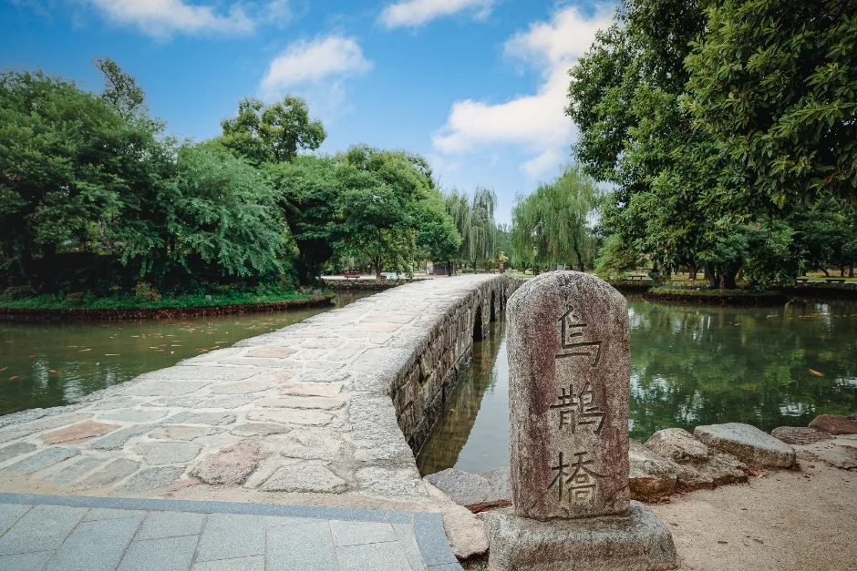
▲ 연못을 건너는 돌다리와 표석. 오작교 일대로 보이며 정확한 지점은 확정하지 않았다. 사진=한국관광공사
ℹ️ 해가 짧아지는 10월의 광한루원
입장료는 18시 전까지 받고 이후는 무료라서, 늦은 오후에 도착해 일몰과 야간 조명을 보는 일정이 요금 면에서 유리하다. 다만 무료 시간대에도 경내 실내 시설의 개방 시간은 다를 수 있다. 실내 시설을 볼 계획이면 18시 이전에 도착하는 편이 낫다(실내 시설 개방 시간은 확인하지 못함).
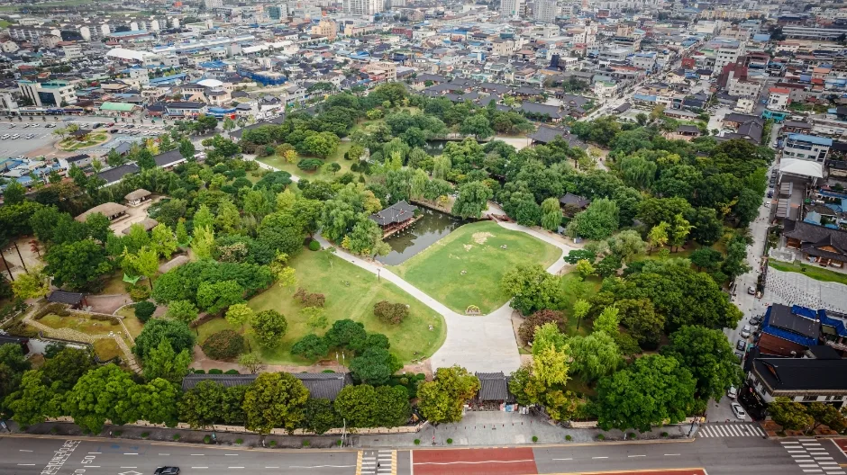
▲ 광한루원 일대를 위에서 본 모습. 시내 한복판에 연못과 정원이 자리한 구조를 볼 수 있으며 녹음기에 촬영된 사진이다. 사진=한국관광공사
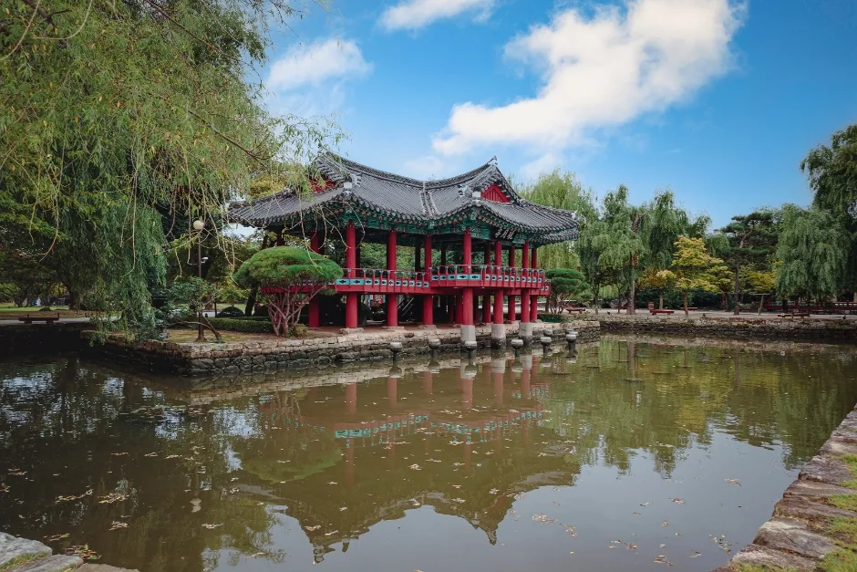
▲ 연못가의 붉은 난간 누각. 단풍철이 아닌 시기의 사진이다. 사진=한국관광공사
| 도착 시간 | 입장료 | 장점 | 주의 |
|---|---|---|---|
| 오전·낮(08:00~18:00) | 성인 4,000원 | 경내 시설을 모두 볼 수 있음, 사진 촬영 밝음 | 10월 연휴·주말은 붐빌 수 있음(추정) |
| 해질녘(17:00~18:00) | 18시 이전 도착 시 유료 | 일몰 직전 연못 풍경 | 18시 이후 무료이므로 17:50 이후 입장 시 요금이 달라지는지 현장 확인 |
| 야간(18:00~21:00) | 무료 | 입장료 부담 없음, 야간 산책 | 실내 시설 개방 여부는 확인하지 못함 |
3. 춘향테마파크 — 광한루원과 묶기 좋은 보조 코스
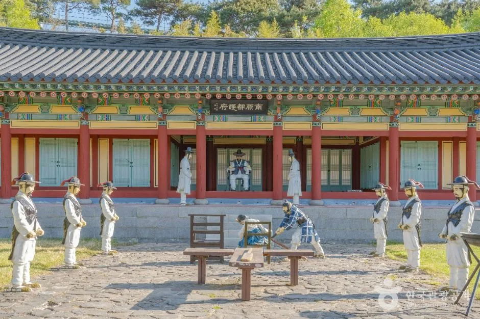
▲ 춘향테마파크의 관아 재현 공간. 춘향전 장면을 인형으로 연출한 모습이다. 사진=한국관광공사
남원관광단지에 있는 춘향테마파크는 춘향의 일대기를 만남·맹약·사랑과 이별·시련·축제의 다섯 마당으로 나눠 꾸민 곳이다(2004년 5월 1일 개장, 한국관광공사 TourAPI 안내). 같은 자료상 연중무휴이며 하절기(4~10월) 09:00~22:00, 동절기(11~3월) 09:00~21:00로 나와 있고, 매주 월요일은 안에 있는 향토박물관만 휴관한다. 문의는 063-620-5799, 주소는 남원시 양림길 14-9이며 주차는 가능하다고 안내돼 있다. 입장료는 2024년 12월 31일 전북일보 보도에서 남원시가 전면 무료화한다고 전해(시행 시점은 보도에 명시되지 않았고, 2026년 현재 유지 여부는 남원시 공식 공지로 대조하지 못했다) 무료로 보는 것이 맞지만, 주차요금은 이번 조사에서 확인하지 못했다.
| 장소 | 운영 | 확인 못 한 것 |
|---|---|---|
| 광한루원 | 08:00~21:00(4~10월), 연중무휴 | 경내 실내시설 개방시간 |
| 춘향테마파크 | 09:00~22:00(4~10월), 월요일 향토박물관만 휴관, 입장료 무료화 보도(2024-12-31) | 주차요금, 2026년 현재 무료 유지 여부 |
| 국립민속국악원(남원시 양림길 54) | 주소만 확인(한국관광공사 TourAPI) | 공연 일정·요금 |
4. 뱀사골 — 와운마을까지, 그리고 주차 현황
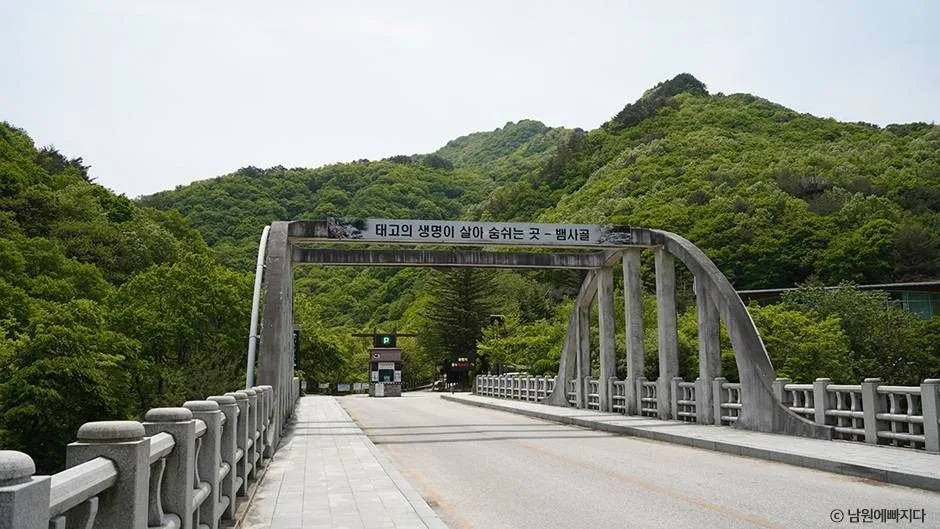
▲ 뱀사골 입구 방향의 아치형 다리 일대. 사진=한국관광공사
뱀사골계곡은 반야봉에서 반선까지 북사면을 따라 흐르는 약 14km 길이의 골짜기로, 기암절벽과 100여 개의 폭포·소가 이어진다고 한국관광공사는 소개한다. 가을에는 형형색색의 단풍이 이 계곡의 대표 풍경으로 꼽힌다.
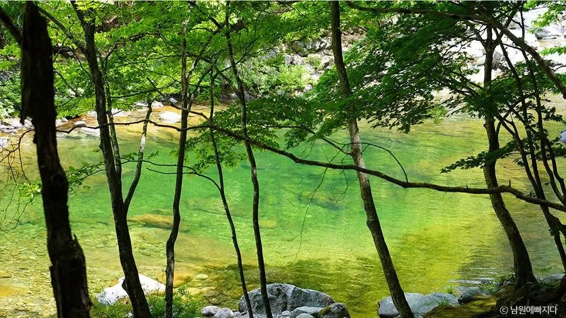
▲ 뱀사골 계곡의 맑은 소. 신록 시기 촬영이다. 사진=한국관광공사
뱀사골 탐방안내소에서 약 3km 안쪽에 와운마을이 있다. 해발 800m에 자리한 마을로, 1595년경 임진왜란을 피해 정착하면서 생겼다는 유래가 전해지고 마을 수호신으로 지리산 천년송이 있다. 한국관광공사 정보에는 뱀사골계곡 입산 가능 시간이 03:00~15:00로 나와 있고 "기상 정보 등에 의해 입산 통제될 수 있으니 전화 문의 후 방문"하라는 안내가 붙어 있다. 문의는 지리산국립공원전북사무소 063-630-8900이다. 오후 3시 이후 입산 제한이 있다고 보면 뱀사골은 오전에 걷는 일정이 안전하다(제한 시간은 현장 공지 우선).
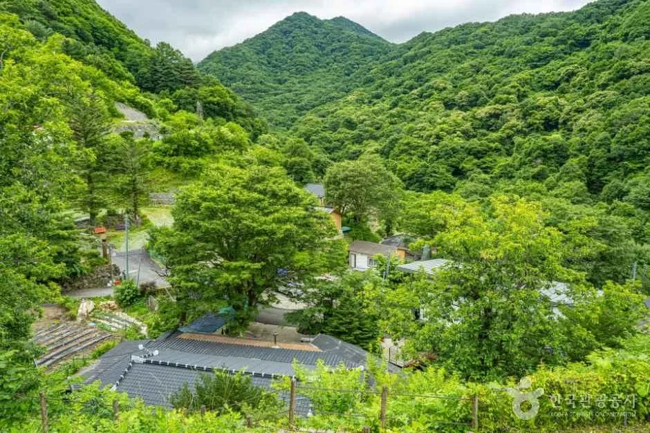
▲ 와운마을 일대를 내려다본 모습. 녹음이 짙은 시기에 촬영된 사진이다. 사진=한국관광공사
| 항목 | 내용 | 확인 수준 |
|---|---|---|
| 계곡 길이 | 반야봉~반선 약 14km | 한국관광공사 TourAPI |
| 와운마을 | 탐방안내소에서 약 3km, 해발 800m, 천년송 | 한국관광공사 TourAPI |
| 입산 가능 시간 | 03:00~15:00, 기상에 따라 통제 | 한국관광공사 TourAPI(공단 최신 공지 확인 필요) |
| 교통관리 | 2026년 7월 1일~10월 31일, 주말·공휴일 인력 추가 배치, 불법 주정차 단속 | 아이뉴스24 보도 |
| 공영 반선주차장 | 71면(대형 16·소형 55) — 2023년 1월 보도, 당시 1년간 무료 운영 | 현재 요금 여부 확인하지 못함 |
| 공단 주차료 설 | 평일 4,000원·주말·성수기 5,000원 | 단일 출처, 확인하지 못함 |
| 탐방 코스 예시 | 반선~화개재 9.2km, 4시간 20분(요룡대·병소·간장소 경유) | 이번 재확인에서도 공단 원문은 찾지 못함, 확인하지 못함 |
| 계곡 길이 표기 차이 | 한국관광공사 약 14km, 다른 보도 화개재~반선 12km | 출처마다 달라 어느 쪽도 단정하지 않음(탐방로 거리와 계곡 길이는 기준이 다를 수 있음) |
교통관리 기간(7월 1일~10월 31일)은 가을 단풍철까지 포함된다. 남원시는 반선주차장 등 공영주차장 이용을 안내하고 차량 높이 제한시설을 설치해 장기 방치 차량을 막는다고 밝혔다. 단풍 절정 주말에는 불법 주정차 단속이 이뤄지는 만큼 도로변에 세우지 않는 편이 낫다.
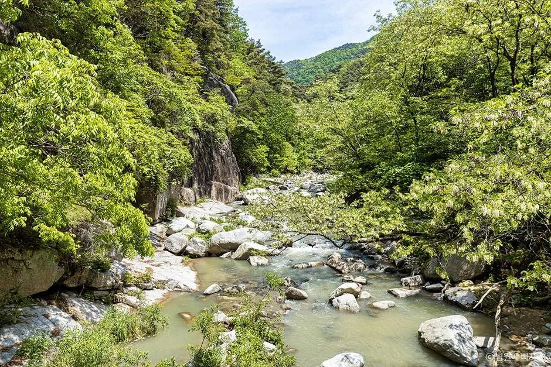
▲ 지리산국립공원(남원) 구역으로 등록된 계곡 사진. 신록 시기 촬영이며 정확한 지점은 확인하지 못했다. 사진=한국관광공사
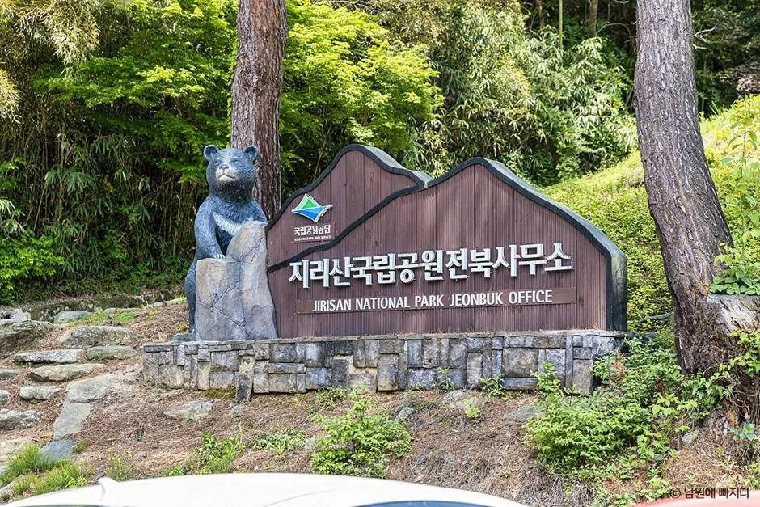
▲ 지리산국립공원전북사무소 표지석. 뱀사골 입산·통제 문의는 이곳 063-630-8900으로 한다. 사진=한국관광공사
✅ 뱀사골 가기 전 체크
· 오전 일찍 도착해 와운마을까지 왕복하고, 입산 제한 시간을 먼저 확인한다
· 주차는 반선 공영주차장 등 지정 구역에, 도로변 정차는 피한다
· 주차요금과 최신 탐방로 통제는 지리산국립공원전북사무소(063-630-8900)에 확인한다
· 단풍 절정 예상일은 지리산 별도 자료를 찾지 못했으니 현지 소식을 본다
5. 달궁·정령치 — 가을 막바지 전에 챙길 것
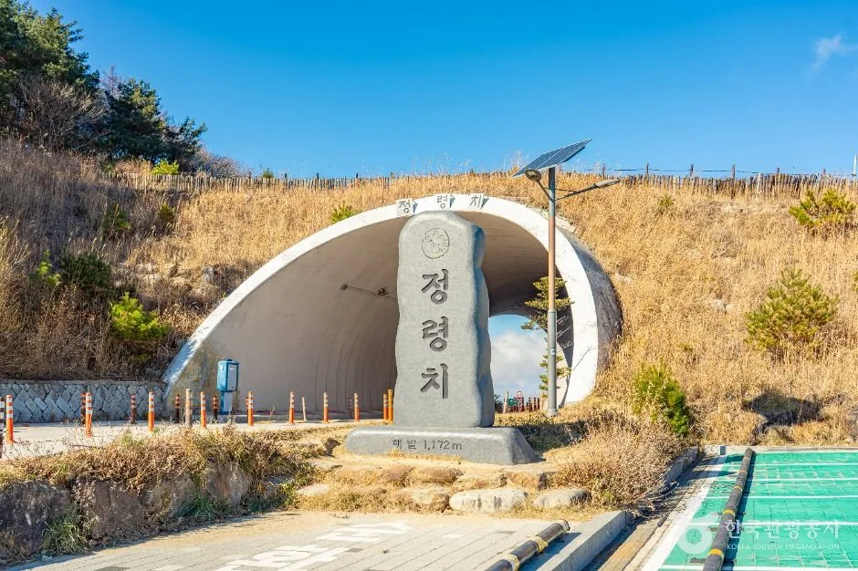
▲ 정령치 표지석. 겨울 초입의 마른 풀밭에서 촬영된 사진으로 보인다. 사진=한국관광공사
정령치는 해발 1,172m로 남원시 주천면과 산내면에 걸친 고개다. 한국관광공사는 정령치 휴게소가 지리산 주능선을 조망하는 전망대 역할을 하며, 동쪽으로는 바래봉과 뱀사골, 서쪽으로는 천왕봉과 세석평전·반야봉이 보인다고 설명한다. 상시 개방이고 주차는 가능하다고 나와 있다. 문의는 산내면 행정복지센터 055-359-6671이다.
2025년 4월 보도에 따르면 남원시는 남원역에서 정령치를 오가는 순환버스를 4월부터 정령치까지 전 구간 운행하고 요금은 1,000원으로 유지했다. 반대로 겨울 결빙 때문에 11월~3월에는 도로 통행이 제한돼 달궁까지만 운행했다. 2026년 노선·시간표는 확인하지 못했고 도로 통제 시작일도 올해 공고를 찾지 못했다. 11월 초 막바지 단풍을 노린다면 출발 전 남원시청에 통제 여부를 확인해야 한다.
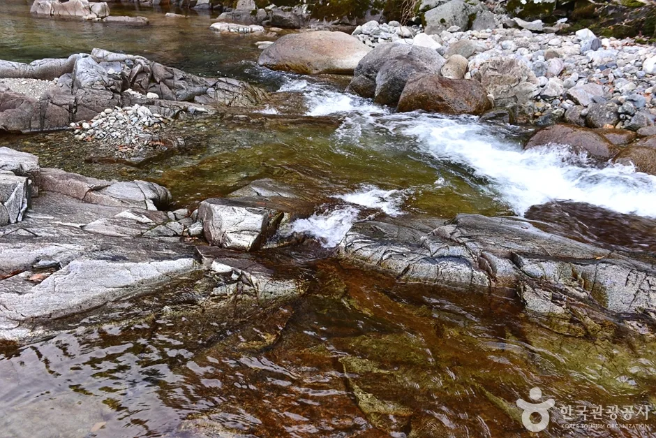
▲ 달궁계곡의 물길. 단풍철이 아닌 시기에 촬영됐다. 사진=한국관광공사
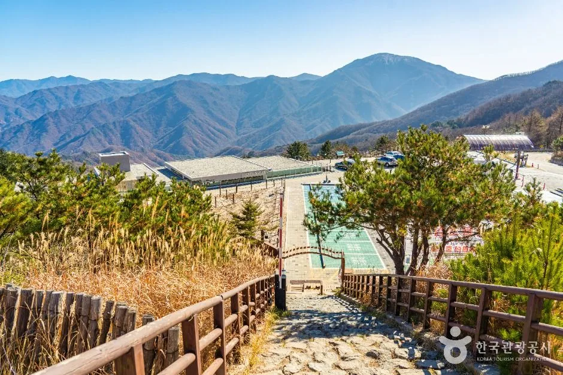
▲ 정령치 일대에서 본 능선. 풀이 마른 늦가을~초겨울로 보이는 풍경이며 단풍 사진은 아니다. 사진=한국관광공사
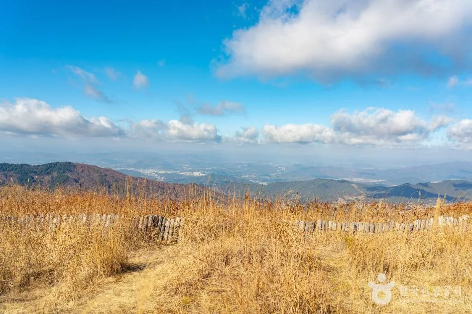
▲ 정령치 조망 지점의 넓은 시야. 마른 풀밭이어서 가을 막바지 이후의 모습으로 보인다. 사진=한국관광공사
| 확인 항목 | 확인된 것 | 확인처 |
|---|---|---|
| 휴게소·고개 개방 | 상시 개방, 주차 가능(한국관광공사) | 산내면 행정복지센터 055-359-6671 |
| 순환버스 | 2025년 4월 정령치 전 구간 재개, 요금 1,000원, 11~3월 달궁까지 축소(전북일보) | 남원시청(2026년 시간표 미확인) |
| 도로 통제 | 겨울 결빙 시 통행 제한 사례 | 올해 시작일 미확인, 출발 전 남원시청 |
| 조망 | 동쪽 바래봉·뱀사골, 서쪽 천왕봉·세석평전·반야봉 | 한국관광공사 안내(날씨에 좌우) |
달궁계곡은 달궁마을에서 심원까지 약 6km 흐르는 계곡으로, 안심소·칠선대·청룡소·쟁반소 같은 포트홀과 폭포가 이어진다(한국관광공사 TourAPI). 달궁자동차야영장과 달궁힐링야영장이 인근에 있으나 이용 조건은 이번 글에서 확인하지 않았다.
6. 반나절·하루 코스표 — 카프리즘 추정 동선
아래 시간대는 공식 운영시간과 입산 제한(15:00)을 바탕으로 짠 카프리즘의 제안이다. 이동 시간은 공식 자료를 찾지 못해 적지 않았으니 내비게이션으로 확인해야 한다.
| 코스 | 시간대 | 동선 | 요점 |
|---|---|---|---|
| 반나절(시내) | 14:00~21:00 | 춘향테마파크 → 광한루원(입장료 18시 전까지) → 18시 이후 야간 산책 | 10월은 하절기라 21시까지 개방, 환급 조건은 현장 확인 |
| 하루(단풍 전) | 09:00~21:00 | 뱀사골(오전, 와운마을 왕복) → 점심 → 광한루원 → 18시 이후 무료 산책 | 뱀사골은 15시 입산 제한을 피해 오전에 |
| 하루(단풍 절정기) | 08:00~18:00 | 뱀사골 탐방 → 달궁 → 정령치(통제 여부 확인) | 도로·순환버스 운행 여부를 출발 전 남원시에 확인 |
| 대체안 | 전체 | 단풍이 덜 들었으면 광한루원·춘향테마파크로 일정 전환 | 단풍 상황이 불확실한 10월 초 방문 시 |
| 궁금한 것 | 확인처 | 번호 |
|---|---|---|
| 광한루원 운영·요금 | 광한루원 | 063-620-8901 |
| 춘향테마파크 운영·주차 | 춘향테마파크 | 063-620-5799 |
| 뱀사골 입산·통제·주차 | 지리산국립공원전북사무소 | 063-630-8900 |
| 정령치 휴게소·고개 사정 | 산내면 행정복지센터 | 055-359-6671 |
자차 이동 팁은 두 가지로 요약된다. 단풍철 주말에는 뱀사골 도로변 주정차가 단속되므로 지정 주차장 이용이 기본이고, 정령치처럼 고도가 높은 도로는 11월이 가까워질수록 결빙·통제 가능성이 커지므로 월동 준비(스노체인·제설 상황)는 남원시 공지를 확인하고 정한다(후자는 일반론이자 카프리즘 추정).
ℹ️ 확인하지 못한 항목
지리산·뱀사골 올해 절정 예상일, 광한루원 입장료 환급 현행 조건, 뱀사골 주차 요금, 정령치 올해 통제 시작일과 순환버스 시간표, 춘향테마파크 주차요금과 무료 입장 현행 유지 여부, 광한루원에서 반선까지의 정확한 거리·시간, 반선~화개재 9.2km 코스 거리의 공단 원문은 이번 재확인에서도 공식 자료로 확인하지 못했다. 방문 전 남원 광한루원(063-620-8901), 지리산국립공원전북사무소(063-630-8900)에 확인하는 편이 낫다.
7. 정리
남원의 가을 하루는 광한루원(4,000원, 18시 이후 무료, 10월 21시까지)을 축으로 짜고 단풍은 10월 마지막 주 이후로 노리는 편이 안전하다. 산림청 예측은 전국 절정이 10월 31일 전후이고 내장산이 11월 4일이지만, 지리산·뱀사골 개별 예상일은 확인하지 못했다. 오늘(10월 6일)은 단풍이 이르다고 보는 것이 합리적이다(추정).
뱀사골은 입산 가능 시간이 03:00~15:00로 안내돼 오전 방문이 낫고, 2026년 7~10월 교통관리 중이라 공영주차장 이용이 권장된다. 정령치는 11~3월 통행 제한 사례가 있어 11월 초에는 통제 여부를 확인해야 한다. 주차요금·환급 제도 등 일부 현행 수치는 확인하지 못했으니 방문 전 전화 확인을 권한다.